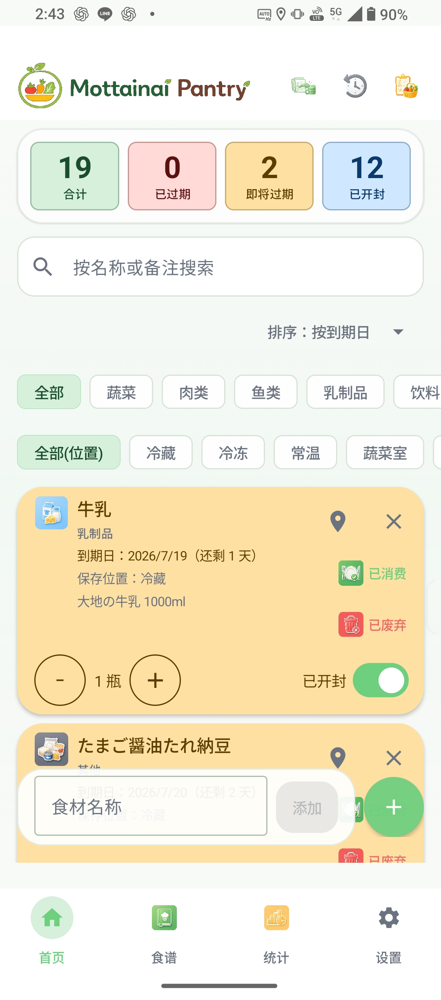
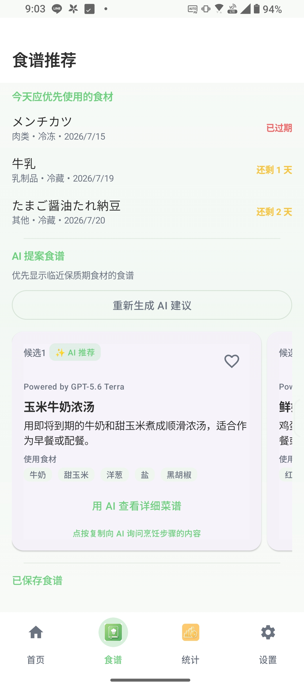
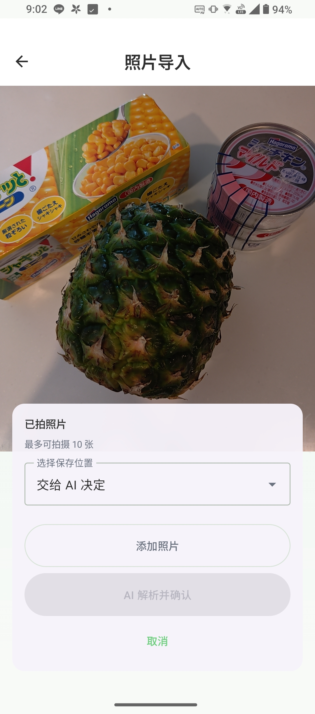
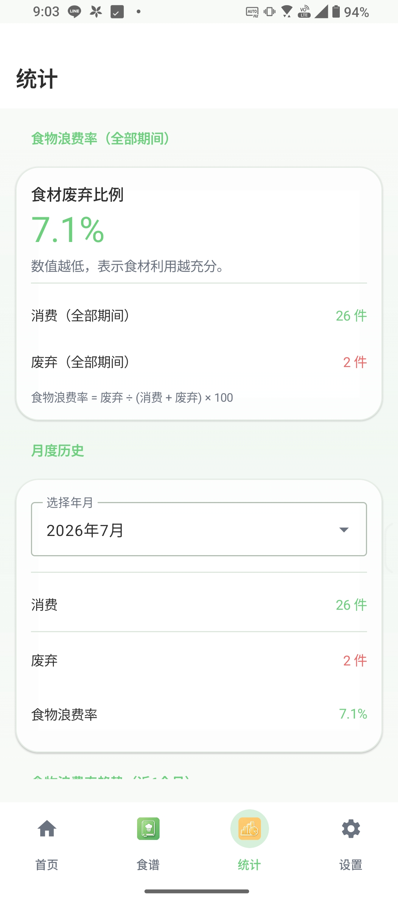

珍惜食材，享用到最后。
一款让家庭食材管理更轻松、帮助减少食物浪费的 Android 应用。
食材管理
首页是登记、编辑、消耗、丢弃和恢复食材的中心页面；常用食材可置顶，并可按单位和分类整理。
快速登记
可在首页快速添加食材名称，也可通过条码查询添加商品，或使用 OCR 扫描保质期。保存前始终可以检查和修正结果。
食谱与购物计划
可使用 ChatGPT 或 Gemini 获取 AI 食谱建议，保存食谱、管理购物清单，并记录需要避开的食材。
统计与备份
查看食物损耗趋势，从统计项目打开符合条件的食材，并通过 CSV、备份和恢复功能保护本地数据。
应用截图

轻松管理家中的食材。

优先推荐即将到期食材的食谱。

AI 自动识别照片中的多种食材。

可视化家庭食物浪费情况。